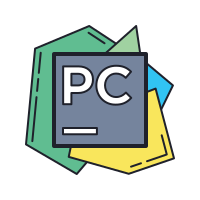
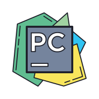
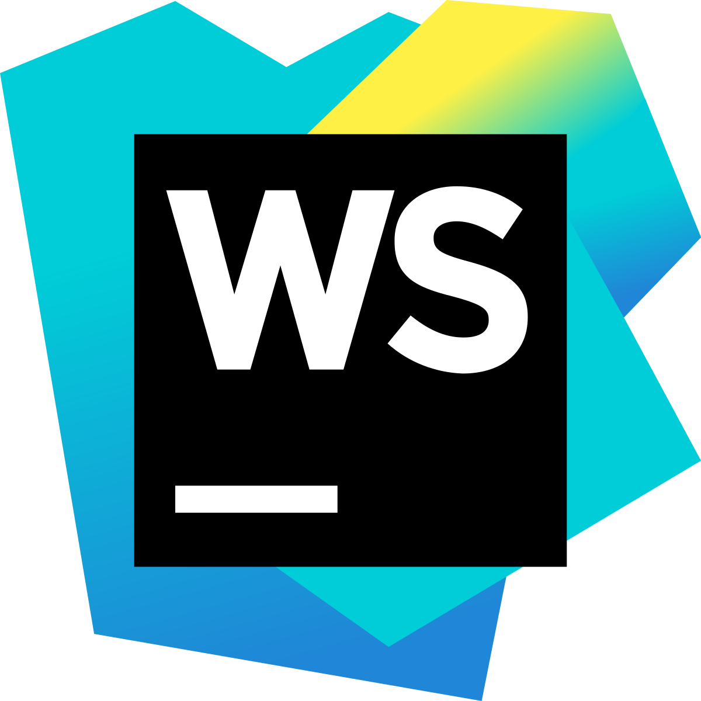
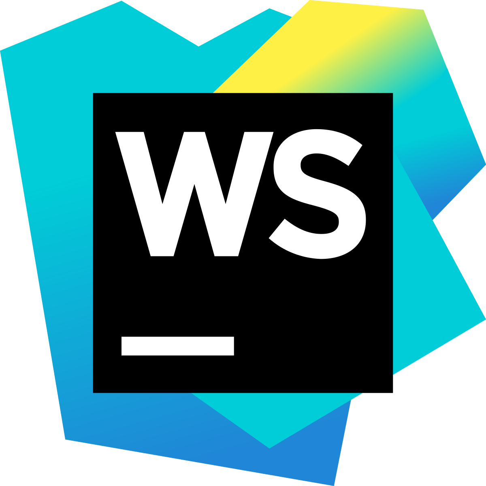

I specialize in creating dynamic web applications using front-end frameworks like React, Angular, and Vue.js, paired with scalable back-end technologies such as Node.js, .NET, Django, and Java Spring Boot. I design and deploy RESTful and GraphQL APIs for seamless data exchange and manage databases using MySQL, PostgreSQL, and MongoDB. To enhance front-end performance, I implement tools like Redux and Vuex alongside responsive and interactive design principles.
To ensure optimal application performance, I employ caching mechanisms like Redis and Memcached, integrate logging and monitoring tools such as Prometheus, Grafana, and Datadog, and utilize containerization with Docker and Kubernetes for scalable deployments. My expertise extends to cloud platforms, including AWS, GCP, and Azure, where I leverage serverless architectures and CI/CD pipelines using Jenkins, GitHub Actions, or CircleCI to streamline development, testing, and deployment processes. I also implement robust authentication systems with OAuth2.0, JWT, and Passport.js to enhance application security and user trust.
Beyond development, I focus on delivering exceptional user experiences by employing UX/UI design tools like Figma and Adobe XD and adhering to accessibility and SEO best practices. By integrating third-party APIs, WebSockets, and Socket.IO, I enable real-time functionalities such as live chats and notifications. Additionally, I design Progressive Web Applications (PWAs) to deliver offline capabilities and mobile-first designs. With a strong emphasis on collaboration and version control using Git, GitHub, and GitLab, I ensure that all projects are maintainable, scalable, and optimized for performance in real-world scenarios.


 


 
